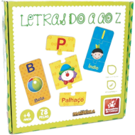

Brincar é um direito de toda criança. Devemos oferecer oportunidades para a construção do conhecimento através da descoberta e da invenção, pois são indispensáveis para a participação ativa da criança no seu meio.
Digite os valores na caixa acima:
Quando reciclamos, nós protegemos o ambiente para nossa vida presente e futura. Através desse jogo conseguimos construir o conhecimento lógico-matemático usando material concreto. Desenvolver também a atenção, a concentração, a observação, o raciocínio-lógico, noções de quantidade, forma, tamanho, número e representação numérica, sequência e ordem.
Digite os valores na caixa acima